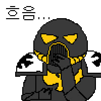

하 개붕아 중세엔 그런 게 없어
탄에 십자 그려놓으면 성불
이거 진짜야???
뻐큐안하잖어 진짜임
노르망디가 아니라 안티오크였네
십자군이 이긴거죠?
천지파열무로 다 쪼갰다고 하네요
문제는 저 장비를 가지고도 졌다는거임
워해머 1k임?
살라딘 진짜 미친놈이었네.
근데 ㄹㅇ 로 상륙작전때 중갑옷 방패병들 선두로 진격하면 생존율 높은거 아님????
중기관총 막으려면 두깨만 20mm 넘어야 한다는데.. 방패 크기로 만드는 순간 무게만 20kg 이래
그래서 나온게 탱크야...
넌 방금 탱크를 발명했어!
나띵 에브리띵
십자 포화, 크로스 헤어 다 십자군 전쟁때 나온 단어들이지
워헤머가 왜 인기있는지 알겠다 ㅋㅋㅋ
ㄹㅇ 간지나네 ㅋㅋㅋㅋ
타!!!찬!!!카!!!

헬싱에서 봤어
155mm 견인공성포가 안나오네... 성벽에 올려놓고 운용하면 보병들 접근을 못하는데